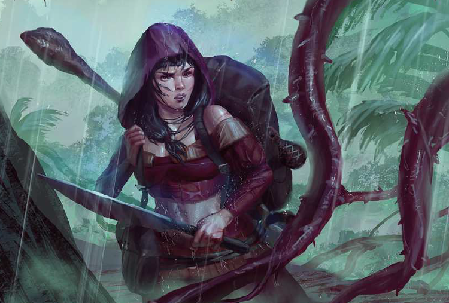

Die Stadtstaaten Meridianas

Al`Anfa, die schwarze Perle, ist die zweitgrößte Stadt Aventuriens. Hier kann man vom Kokosmattenflechter zum Granden aufsteigen, was Einwanderer aus ganz Aventurien anzieht. Doch ebenso schnell kann man auch vom freien Bürger zum Sklaven werden, denn die Bewohner der Stadt sind überzeugte Sklavenhalter. Allzu Unvorsichtige finden sich gar im Hanfla wieder, der hier ins Meer mündet, denn die Al`Anfaner verehren den Totengott Boron als höchsten der Zwölfe und pflegen darüber hinaus einen verschwenderischen Umgang mit Giften und Rauschmittel. Selbst Meuchelmord bleibt oft ungesühnt, was der Stadt in Nordaventurien auch die Bezeichnung "Pestbeule des Südens" eingebracht hat. Die Armen sind hier zwar nicht ärmer als anderenorts, aber die Reichen sind unvorstellbar reich - neben einem al`anfanischen Granden, einem Mitglied der wichtigsten Familien der Stadt, sieht selbst manch ein mittelreicher Graf wie ein Habenichts aus.
Erzfeind Al`Anfas ist Brabak, wo die Sklaverei verboten ist und wo man die Granden ob ihrer Exesse gleichermaßen beneidet und verachtet. Die Stadt an der sumpfigen Mysob-Mündung steht aufgrund jahrelanger Misswirtschaft vor einem riesigen Schuldenberg. Als Tor zum legendären Südkontinent Uthuria wird zwar viel Geld ins Brabaker Staatssäckel gespült, doch das geht meist ebenso schnell wieder verloren. Gern besuchen Freigeister die Stadt, die an der hiesigen schwarzmagischen Akademie frei von Konventionen und Einschränkungen ihre Studien betreiben können.
Die anderen Städte der Region, wie etwa Chorhop, Mengbilla, Sylla oder H`Rabaal, waren meist ehemalige Provinzen anderer Reiche, die heute jedoch ebenso unabhängig sind, wie das kleine Dschungelkönigreich der Kemi. Einzig Hot-Alem ist Gareth noch geblieben und untersteht als Protektorat dem Mittelreich. Unabhängige Stadtstaatengibt es ansonsten kaum. Wer nicht freiwillig das Bündnis mit der Goldenen Allianz (Horasreich, Brabak, Kemi) oder Al`Anfa suchte, fand sich alsbald von letzterem erobert. Selbst die alte Königsstadt Mirham, nomiell Hauptstadt des Vizekönigreichs Meridiana, gilt weiterhin nur als Vasell des deutlich mächtigeren Al`Anfa.